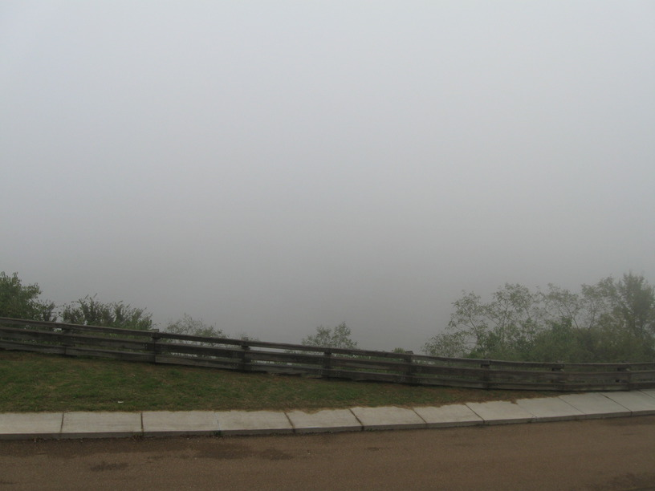
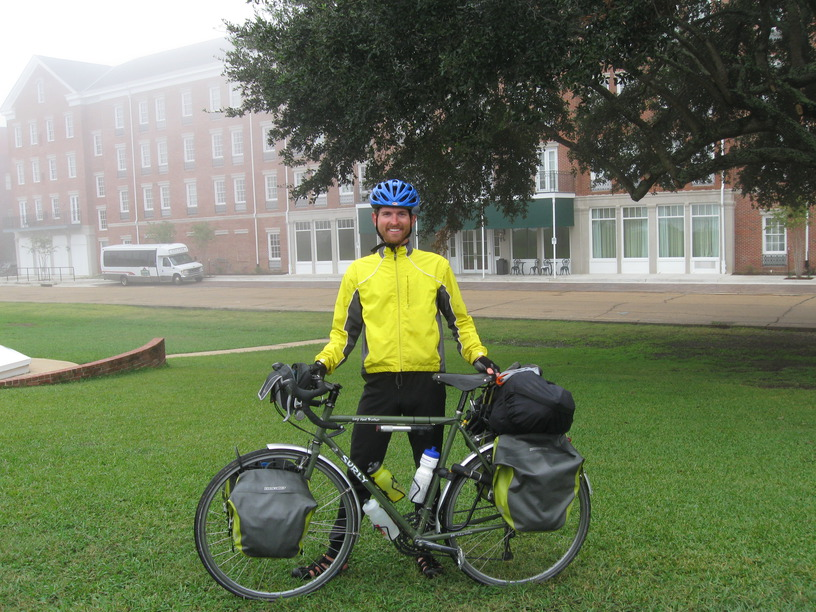
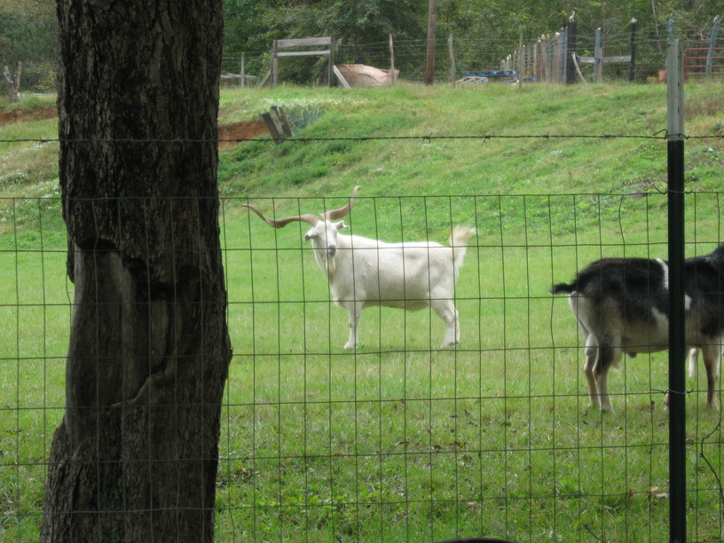
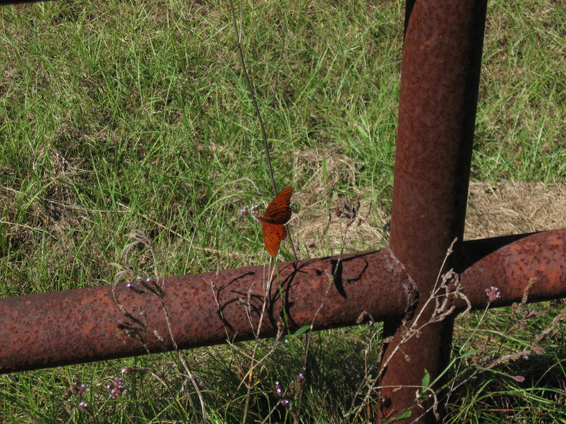

24 Oct 2008, Centreville, MS
Wow, another day full of generosity. I rode to Natchez with Ben & Meg. We got breakfast, then went to the river front, where I got my first (ever?) view of the Mississippi . . . bathed in fog. It was like looking at a white wall. Oh well—tomorrow I'll cross it on a ferry, and it should be totally clear.
I left Ben & Meg's company & rode SE out of town. As I rode, I came across a yard/field full of goats. One billy had horns that were at least 18" long (each). I stopped to take a picture, & a woman came out of the house, calling to me, "You like our goats?" When I told her that I was particularly impressed by the one billy's horns, she told me that when he died I could have them. Apparently he was over 50 years old. I left her my address & she gave me a deer's antler as a souvenir & made me promise I'd keep it, so I strapped it to my bag & thought about where else & how else I could attach it—it might have to go on my helmet, Sheldon Brown style.
Around 4:30 I rolled into Centreville, MS, needing to refill my water & use the bathroom. I was heading into the bank when a woman coming the other way saw me & asked if I had been traveling a long way. It didn't take long to learn her name—Judi—and for her to offer me their travel trailer for the night. So I'm here, after two meals (my mac & cheese, and the chili & veggies that Judi & Tom made), lots of good conversation & finally a hot shower. Anyway, I've got to sleep soon, because I'm joining Judi & Tom in helping at their church's food pantry in the morning. I've been the recipient of so much kind generosity from strangers.



